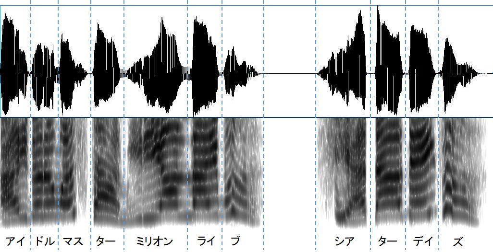
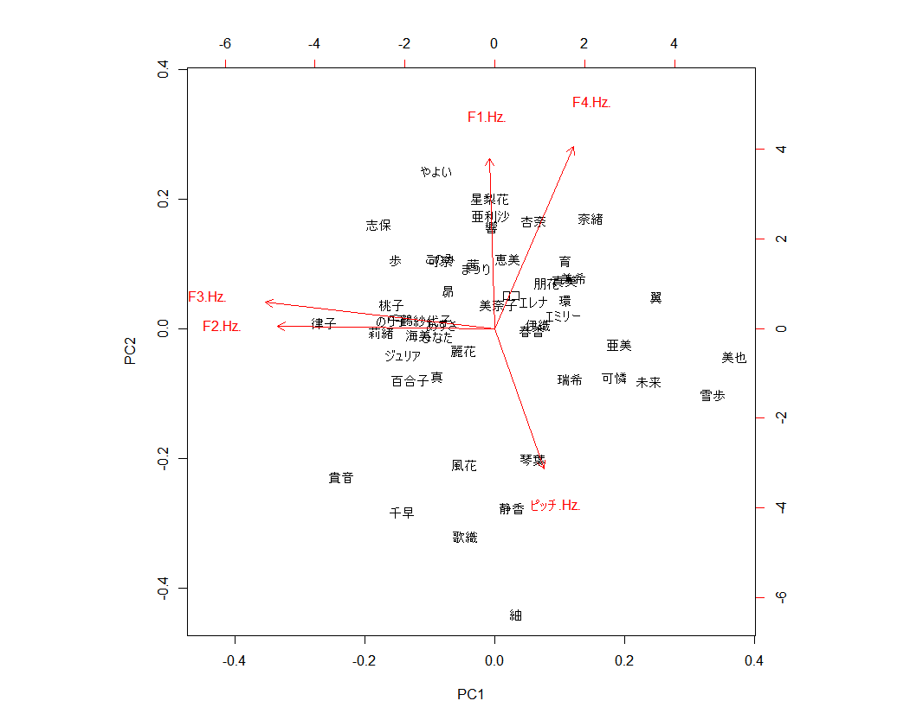

ミリシタボイス波形データ
音声データ
ミリシタで視聴可能な「アイドルマスター ミリオンライブ！ シアターデイズ！」の音声から、波形グラフとスペクトログラムを作成するとのようになる。

発声と波形の対応例(データ：中谷育(C.V. 原嶋あかり))
全アイドルの波形グラフとスペクトログラムを作成した結果をに示す。合わせて、ピッチ、第1～4フォルマントの計算結果を示す。
分析
ピッチ、第1～4フォルマントの主成分分析をおこなった結果をに示す。似た声質のアイドル/声優は近くの場所に集まると思ったんですが、よく分かりませんでした。

主成分分析(ピッチ、第1～4フォルマント)
- 大人っぽい落ち着いた雰囲気のアイドルがグラフの下のほうに集まっている感じがあります。しかしピッチが非常に高いグループです。落ち着きのあるアイドルなのでピッチは低いイメージがあるのに、逆の結果です。タイトルコールであり、他のアイドルとテンションを合わせる必要があったので、ピッチを上げすぎてしまったのかもしれません。
- 亜美と真美の位置がけっこう離れている。亜美は高いパートが得意で真美は低いパートが得意らしい(ミリシタ アイドルのヒミツより)ので、それが反映されているんだろうか？下田は天才。
備考
- ミリシタアプリのタイトルコール音声(「アイドルマスター ミリオンライブ！ シアターデイズ！」)から波形グラフとスペクトログラムを作成
- スペクトログラムは0-5000Hzの範囲
- グラフ作成、ピッチ、フォルマント計算には音声解析ソフトPraatを使用した。なおピッチおよびフォルマントは全領域の平均値を計算した。